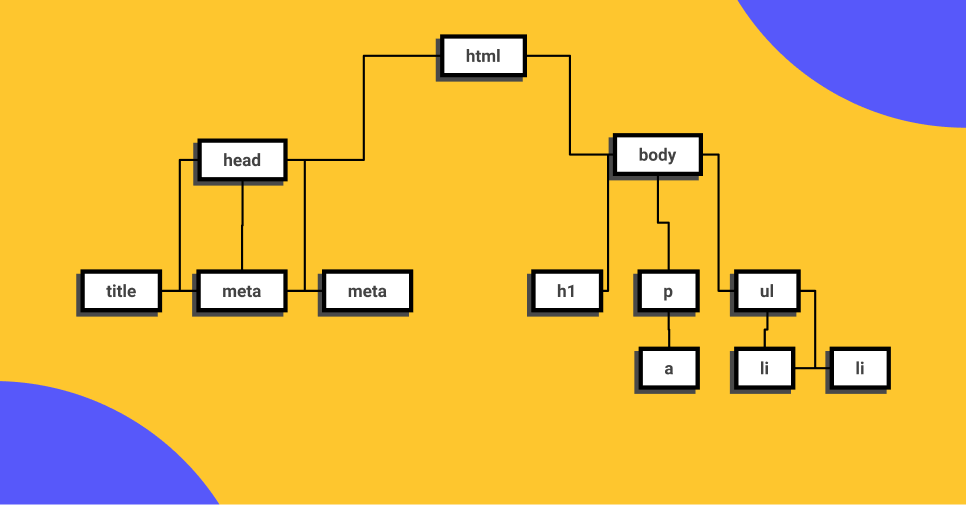

Este es el inicio de tu carrera como Desarrollador Web, empezarás aprendiendo HTML y CSS para la creación de contenidos, en el nivel 2 aprenderás de componentes y en 3 sobre layouts.


Hyper Text Markup Language o Lenguaje de marcas Hipertexto. Es el componente más básico de la web. Define el significado y la estructura del contenido.
Las etiquetas HTML van a ayudarnos a brindar una estructura y semántica al contenido de nuestro website y cada una tiene características y usos diferentes aunque visualmente den un resultado similar.
Muchas etiquetas son fácil de diferencias como los headings o las imágenes y otras diferentes como header, footer, section o div, aquí es donde la semántica será la respuesta y si sabemos un poco de inglés también podremos darnos una pequeña idea de su uso pero en este curso vamos a usar las más importantes y que serán parte
El Document Object Model es una estructura de árbol que representará todos nuestros proyectos web como si un árbol genealógico fuera: padres, hijos, hermanos con niveles infinitos. cuando entendemos esta anidación podemos identificar dependencias, herencias en css y que tan complejo es
La semántica le brinda sentido a cada elemento existen en un sitio web, algunos elementos será meramente decorativos y no deben significar nada pero otros serán títulos y deberán estar en diferente jerarquías o alguna secciones serán más relevantes que otras, esto ayudará a los motores de búsqueda como Google o
Los atributos le dan características extra a las etiquetas para complementar información y son pre programadas por el navegador, algunos atributos funcionan en todas las etiquetas de la misma forma como ‘class’ pero otros atributos funcionan en solo alguna etiquetas como src
Hojas de Estilo en Cascada (del inglés Cascading Style Sheets) o CSS es el lenguaje de estilos utilizado para describir la presentación de documentos HTML

Chrome va a ser el navegador que utilizaremos en el curso por su extenso soporte de nuevos estándares y herramientas de desarrollo avanzadas y de amigable uso.
1. Tamaño del del contenido / ancho y alto 2. Padding / Relleno 3. Border / Bordes 4. Margin / Márgenes
width / height
margin / margin-top | margin-right | margin-bottom | margin-left
border / border-top | border-right | border-bottom | border-left
padding / padding-top | padding-right | padding-bottom | padding-left
inline-size / block-size
margin-block | margin-inline | margin-block-start | margin-block-end | margin-inline-start | margin-inline-end
border-block | border-inline | border-block-start | border-block-end | border-inline-start | border-inline-end
padding-block | padding-inline | padding-block-start | padding-block-end | padding-inline-start | padding-inline-end

Si tienes alguna pregunta escríbeme a me@leonidasesteban.com